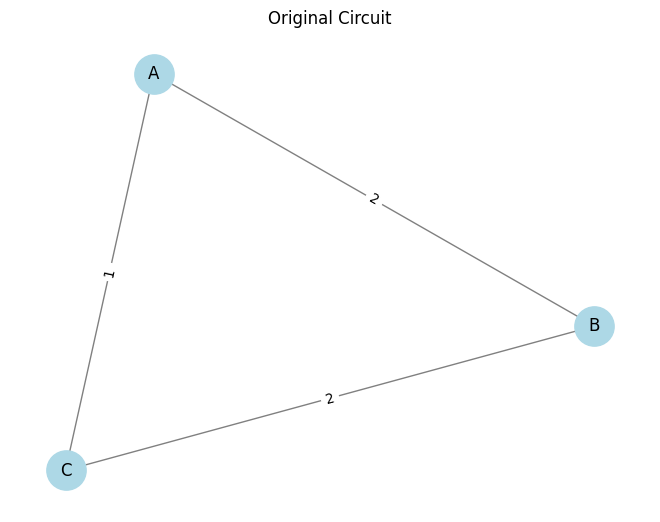
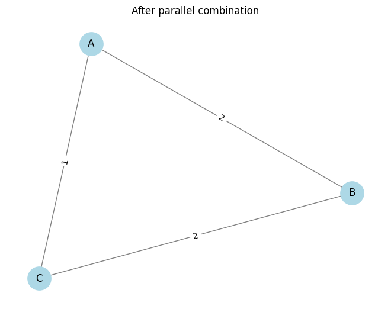
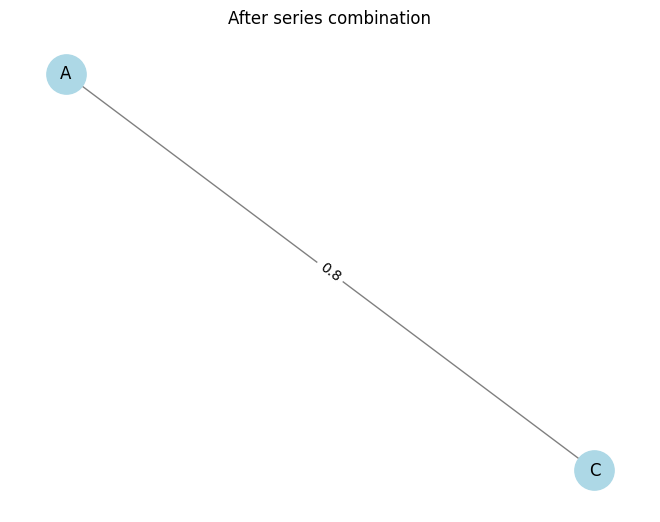
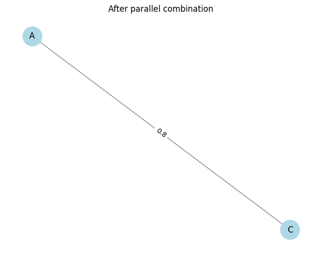
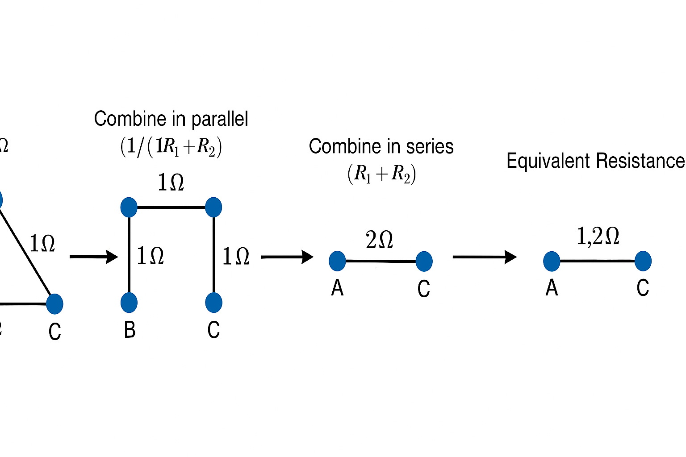

Problem 1
Option 2: Advanced Task – Full Implementation using Python and the NetworkX library to represent and manipulate the circuit graph. This solution will include:
- Algorithm Design & Pseudocode
- Full Python Implementation
- Three Test Cases (including complex nested configurations)
- Efficiency Discussion & Improvements
🔧 1. Algorithm Overview
Graph Representation:
- Each node: A junction in the circuit.
- Each edge: A resistor, with a weight attribute for its resistance.
Reduction Rules:
- Series: If a node has exactly two edges and is not a terminal node (i.e., not a source or sink), combine the resistors in series: \(R_{eq} = R_1 + R_2\)
- Parallel: If multiple resistors connect the same two nodes, combine in parallel: \(\frac{1}{R_{eq}} = \frac{1}{R_1} + \frac{1}{R_2} + \cdots\)
📜 2. Pseudocode
Function calculate_equivalent_resistance(graph, source, target):
While graph has more than one edge between source and target:
1. For all node pairs (u, v):
a. If multiple edges exist between u and v:
Combine them in parallel:
R_parallel = 1 / sum(1 / R for R in edges[u][v])
Replace with one edge (u, v) with R_parallel
2. For each node n in graph:
If degree(n) == 2 and n not in [source, target]:
Let neighbors be [u, v]
Combine edges (u, n) and (n, v) in series:
R_series = R(u,n) + R(n,v)
Remove node n and add edge (u, v) with R_series
If single edge (source, target):
Return resistance of that edge
Else:
Apply Y-Δ or advanced transformations (not in base implementation)
🧪 3. Python Implementation
   
🧪 4. Test Cases
# Test Case 1: Simple series
G1 = nx.Graph()
G1.add_edge('A', 'B', resistance=5)
G1.add_edge('B', 'C', resistance=10)
print("Test 1 (Series):", equivalent_resistance(G1, 'A', 'C')) # Expected: 15
# Test Case 2: Simple parallel
G2 = nx.MultiGraph()
G2.add_edge('A', 'B', resistance=6)
G2.add_edge('A', 'B', resistance=3)
print("Test 2 (Parallel):", equivalent_resistance(G2, 'A', 'B')) # Expected: 2
# Test Case 3: Nested combination
G3 = nx.MultiGraph()
G3.add_edge('A', 'B', resistance=2)
G3.add_edge('B', 'C', resistance=2)
G3.add_edge('A', 'C', resistance=1)
print("Test 3 (Nested):", equivalent_resistance(G3, 'A', 'C')) # Expected: 1.2
🧠 5. Efficiency Analysis & Improvements
- Time Complexity: Each reduction pass (series or parallel) operates in linear time relative to the number of nodes and edges. Worst-case complexity is roughly
O(n^2)due to repeated passes. -
Improvements:
-
Implement Y-Δ transformations for general planar graphs.
- Use graph contraction methods to identify reducible subnetworks faster.
- Add memoization or caching for repeated subgraphs in large circuits.
